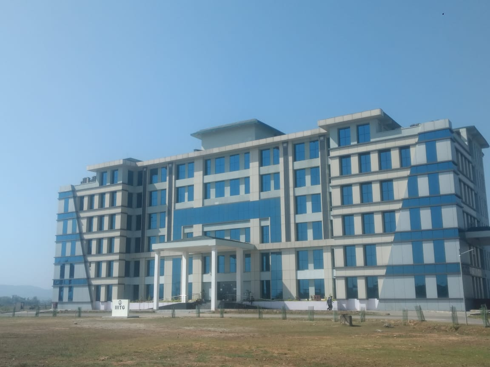
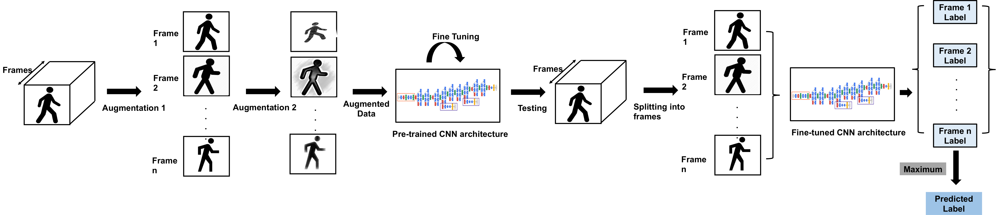
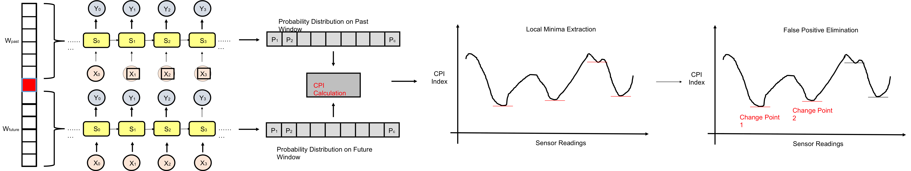
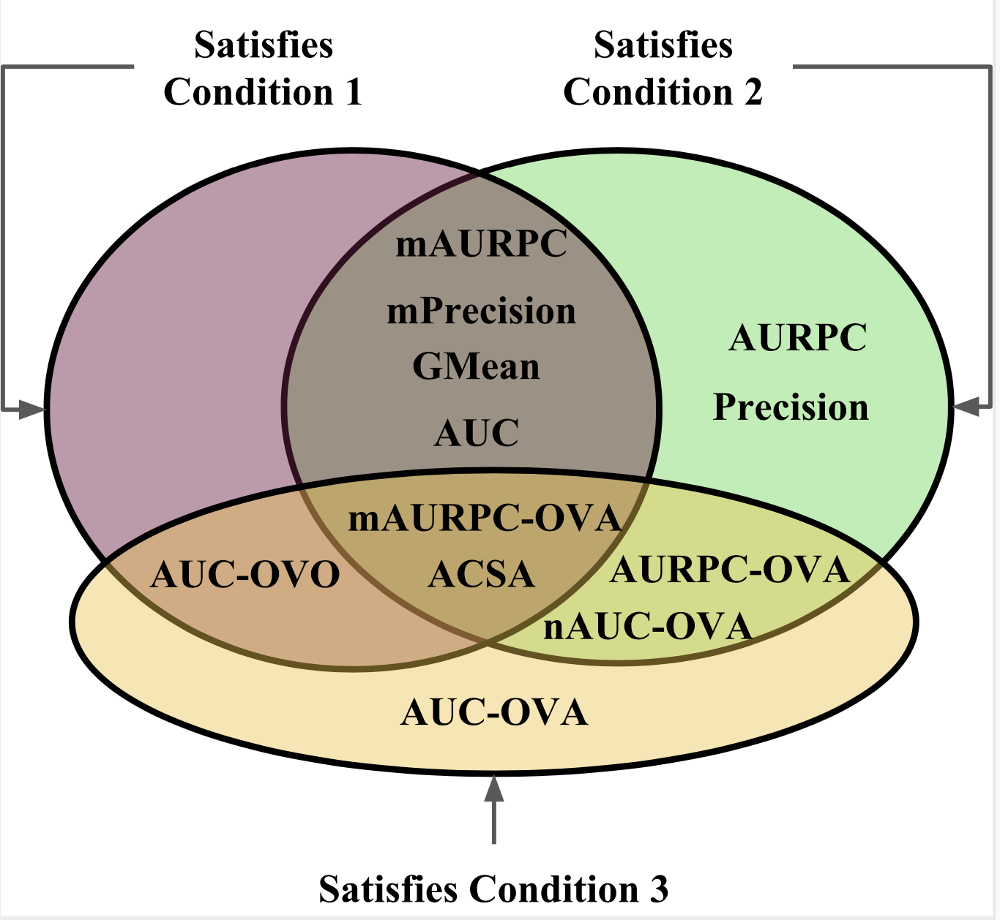
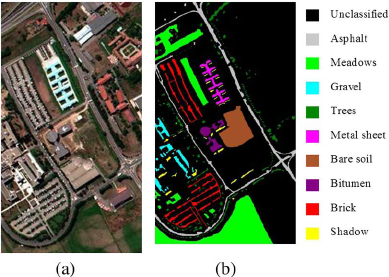
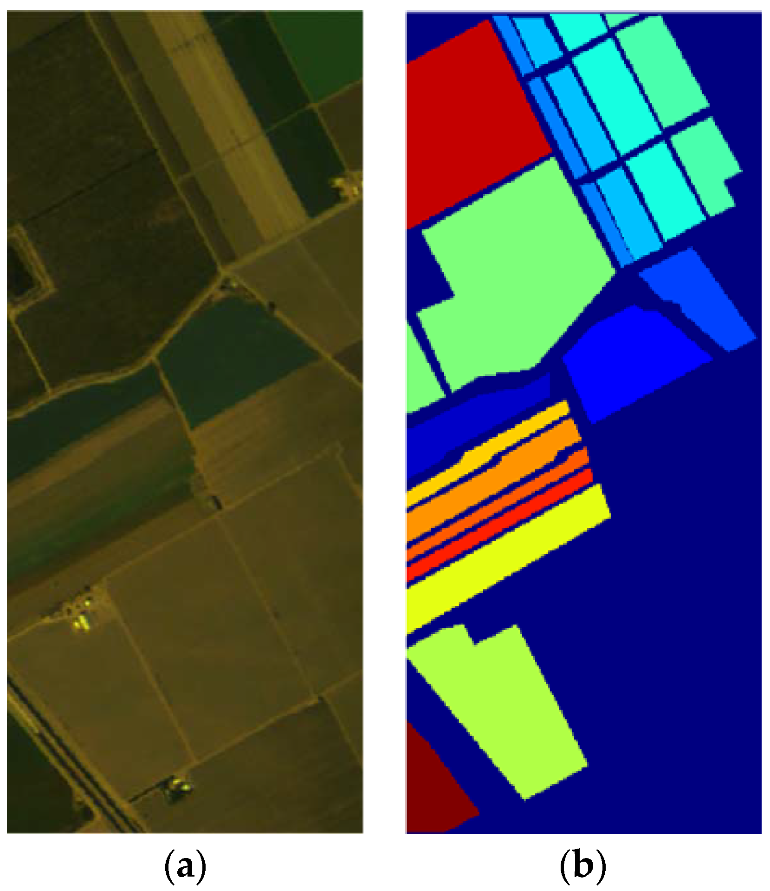

Educational Background
I have completed my undergraduate studies (B.Tech. in Computer Science and Engineering) from Indian Institute of Information Technology Guwahati (IIITG) with a CGPA of 9.32/10 and Department Rank 1. My academic transcript for B.Tech. can be found here.
Prior to that, I completed my High School and Middle School Education from S. P. College and Jnana Prabodhini Prashala, Pune.

Research Interests
During my undergraduate years, I have developed a keen research interest in the domains of Machine Learning, Computer Vision, and Deep Learning. In particular, I have worked on research projects in the areas of Semi-Supervised Learning, Remote Sensing, Image Segmentation, Theoretical Analysis of Machine Learning Performance Measures, and Activity/Subject Recognition for Smart-Home Settings. I have also spent time as a research intern at ISI Kolkata and University of Pavia under the guidance of Dr. Swagatam Das and Prof. Paolo Gamba. The link to my Google Scholar profile can be found here. A brief description of my research projects is given below.

Subject Recognition (SR) refers to the task of identifying persons performing activities in a smart environment using the data captured by the sensors installed in it. The existing literature mainly concentrates on supervised SR using the sensor data captured through multiple modalities. However, majority of the real-life sensor datasets are not annotated with the subjects performing the activities, which creates a scarcity of labeled data samples for this task. Issues of privacy and high manual annotation costs further complicate the problem of less labeled data. In addition to this problem, most of the datasets are of low modalities. Hence, the challenge lies in developing semi-supervised frameworks that are suitable for low-modal sensor data with sparse or no labels. Towards this, we initially perform benchmark experiments to analyze the factors of modality and amount of labeled data in the context of SR. Then, we propose semi-supervised frameworks for SR on the data collected by low-modal ubiquitous and visual sensors. In particular, we propose a clustering-based pseudo label generation algorithm to facilitate the training process in a semi-supervised domain for ubiquitous data. On the other hand, we propose Transfer Learning and Data Augmentation (TLDA) framework to perform SR on visual data in semi-supervised domain. To validate our proposed frameworks, we perform experiments on three real-world datasets, namely Smartphone, OPPORTUNITY,and UTD-MHAD dataset to achieve an accuracy of around 77%, 98%, and 91% respectively. Finally, we also provide an analysis on the aspect of merging modalities to propose a new research dimension for SR.

The task of Activity Recognition (AR) on ubiquitous sensor data has become an active research domain due to the development and widespread use of low-cost commodity sensor devices.
Traditionally, this task is performed on annotated datasets where manually identified change points denoting the start and the end of the data points are present.
However, majority of the real-world smart home applications generate un-annotated data streams, where such change points are not known in prior.
In this paper, we address this problem by proposing a real-time annotation framework for Activity Recognition based on Change Point Detection (CPD).
First, we investigate the components of feature extraction, data augmentation, noise handling, and classification to propose the state-of-the-art activity recognition framework.
We then propose S-CPD, a novel transfer learning based CPD algorithm, which uses similarity of probability distributions in order to generate a change point index (CPI) corresponding to each of the sensor reading in the data stream.
Based on this calculated CPI, we segment the data stream and allows us to perform enhanced annotations.
To test the efficiency of this proposed annotation framework, we perform extensive experimentation on real-world smart home datasets. Our proposed solutions achieve state-of-the-art results for the tasks of AR and annotation on all the selected datasets, which outperform the existing best methods by around 1.6% and 14% respectively.
In addition, our S-CPD algorithm provides comparable performance with that of the state-of-the-art CPD algorithm.

The task of gait-based subject recognition (SR) in ubiquitous sensor environments has become popular due to its wide range of applications in biometric authentication and smart home products. In recent times, a significant amount of work has been done in SR using supervised learning algorithms on datasets having high modality. However, the process of annotation for SR is difficult due to the challenges like privacy and high manual cost, which results in a scarcity of labeled data samples. Also, for the datasets having less modality, the task of SR in a semi-supervised domain is sparsely explored and challenging. In this work, we analyze the effect of these two factors (sparse labels and low modality) which are critical for SR in ubiquitous data. We select two datasets of ubiquitous data that are relatively unexplored in the context of SR. The datasets, namely OPPORTUNITY and Smartphone used to perform SR using conventional supervised learning algorithms to benchmark the results. Then we perform extensive experimentation to analyze the effect of the aforementioned factors over the task of SR by studying the variations in classification accuracies. Next, we propose our semi-supervised framework for SR based on the concept of pseudo labels to counter the adverse effects of low modality and lack of labels. Experimental results show that our approach offers up to 77% and 98% accuracy on the Smartphone and OPPORTUNITY dataset respectively.

Indices quantifying the performance of classifiers under class-imbalance, often suffer from distortions depending on the constitution of the test set or the class-specific classification accuracy, creating difficulties in assessing the merit of the classifier. We identify two fundamental conditions that a performance index must satisfy to be respectively resilient to altering number of testing instances from each class and the number of classes in the test set. In light of these conditions, under the effect of class imbalance, we theoretically analyze four indices commonly used for evaluating binary classifiers and five popular indices for multi-class classifiers. For indices violating any of the conditions, we also suggest remedial modification and normalization. We further investigate the capability of the indices to retain information about the classification performance over all the classes, even when the classifier exhibits extreme performance on some classes. Simulation studies are performed on high dimensional deep representations of subset of the ImageNet dataset using four state-of-the-art classifiers tailored for handling class imbalance. Finally, based on our theoretical findings and empirical evidence, we recommend the appropriate indices that should be used to evaluate the performance of classifiers in presence of class-imbalance.

Recent development in deep learning (DL) methodologies have shown promising results on various computer vision tasks including classification of hyperspectral data. However, these methodologies are expected to suffer in the presence of lack of training data, due to complex network architecture and a large number of parameters. In this paper, various K-means based clustering techniques are explored to generate pseudo labels to facilitate the training of deep networks. To tackle the curse of dimensionality, an auto-encoder (AE) based dimensionality reduction method is employed. Finally, the classification is done using Convolutional Long Short Term Memory Cells (ConvLSTM) which outperforms the rest of the deep neural networks used. In addition, an analysis of the effect of the proposed dimensionality reduction method on clas- sification accuracy is presented. The efficacy of the proposed approach is demonstrated on two real-world hyperspectral image data sets namely the “University of Pavia” (UP) and “Salinas”.

In this paper, a hyperspectral image classification technique is proposed using semi-supervised random forest (SSRF). Robust node splitting in the random forest requires enormous training data, which is scarce in remote sensing applications. In order to overcome this drawback, we propose utilizing unlabeled data in conjunction with labeled data to assist the splitting process. Moreover, in order to tackle the curse of dimensionality associated with a hyperspectral image, we explore nonnegative matrix factorization (NMF) to remove redundant information. Experimental results confirm the efficacy of the proposed method.